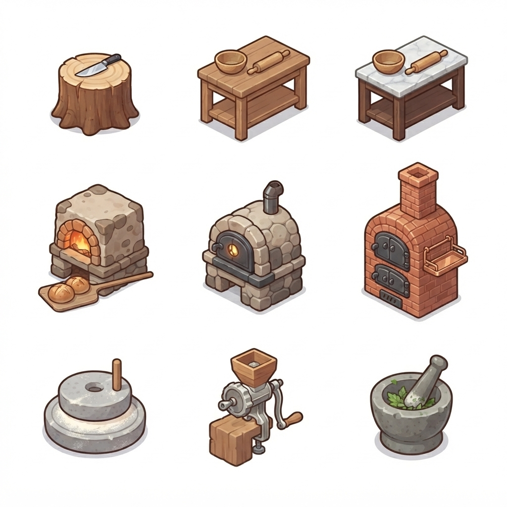
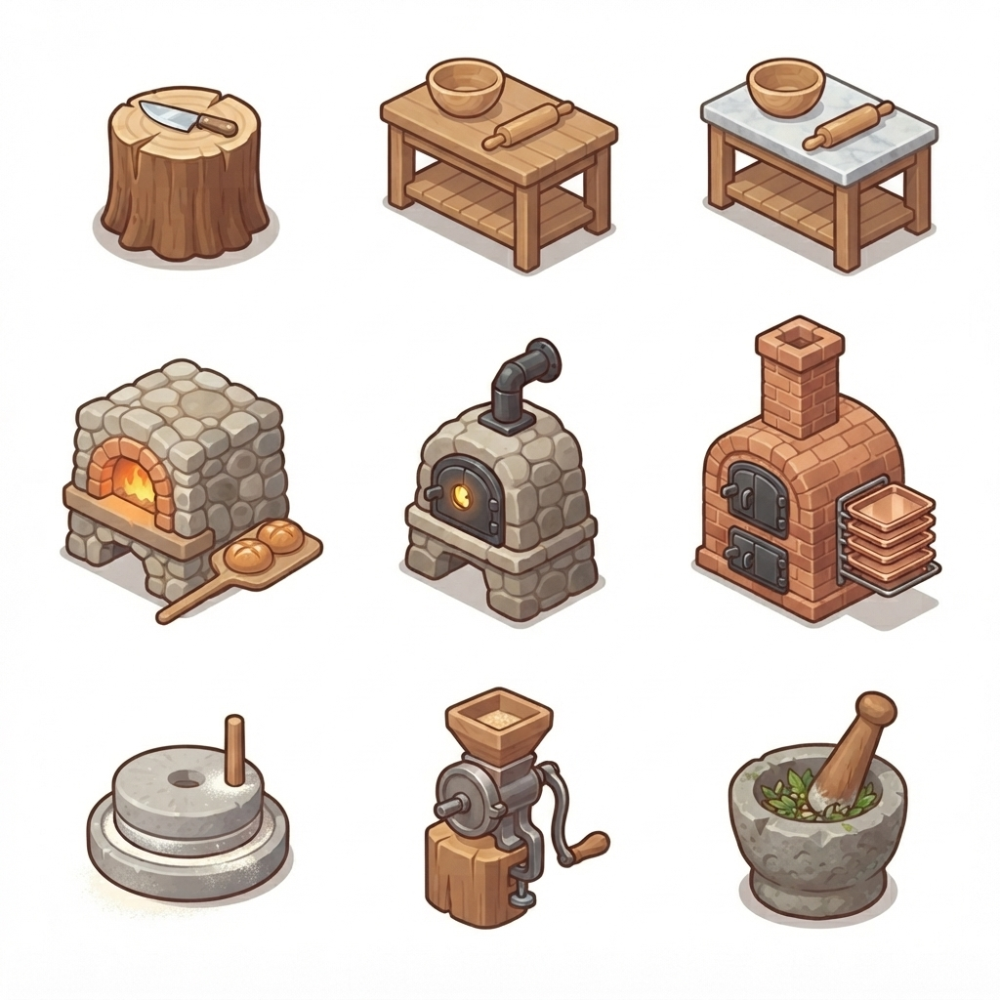
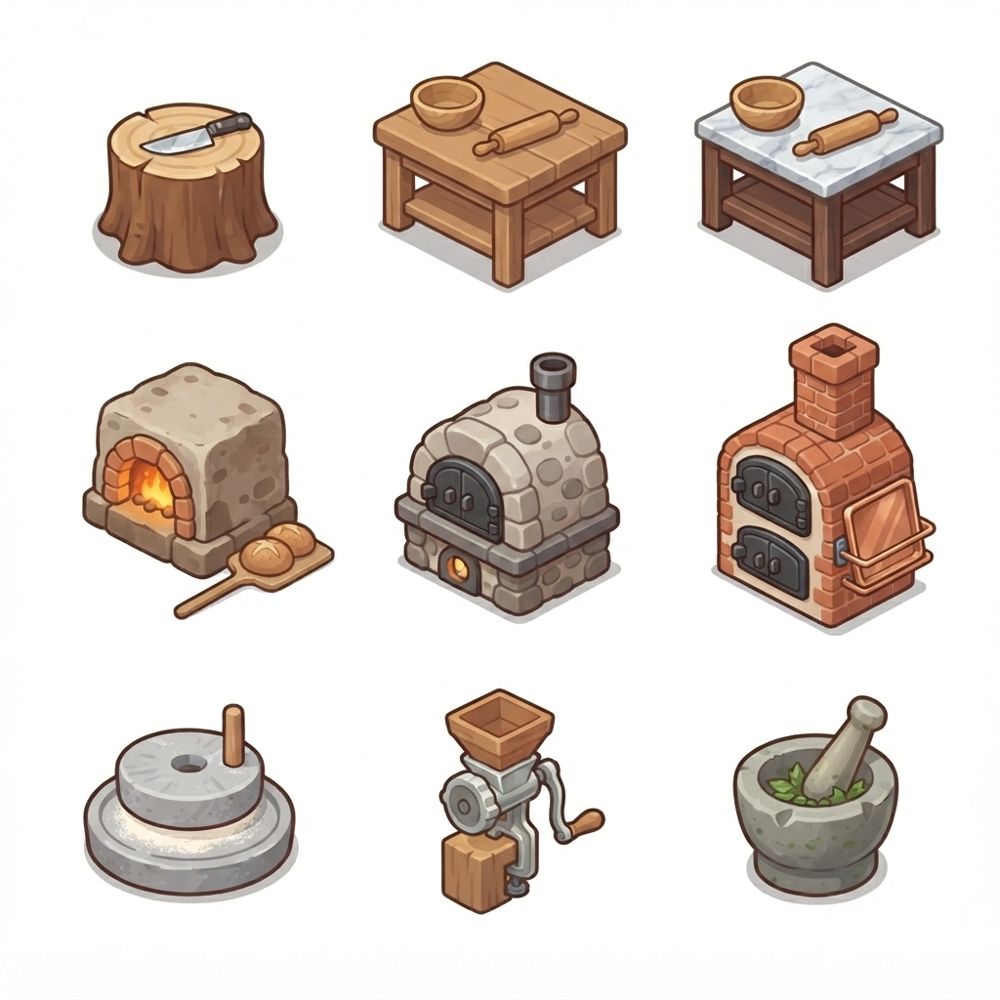

Green frame = the pick used in the game. To swap: python3 .claude/skills/openart-pictures/fetch.py pick sheet62-interior-e <version>, then import again.



A sprite sheet of exactly 9 separate objects in 3 rows of 3: kitchen and cooking stations of an old-fashioned farm, as game station icons, in exactly the art style of reference image 1 (use it only for the style): bright, friendly mobile-game cartoon, thick rounded dark outlines, flat colours with simple cel shading, chunky cute proportions, three-quarter top-down view (isometric, like Hay Day), small soft shadow under each. Plain pure white background, evenly spaced with wide white space between them, none touching, each one solid piece with no loose crumbs, sparks, steam, smoke, sparkles or motion lines beside it. No text, no letters, no numbers, no captions under the objects, no frames, no grid lines, no people, no hands, no faces on any object. All nine are seen from the same angle at about the same scale. Row 1: (1) chopping block: a thick round tree stump with a flat cut top and a small iron kitchen knife lying on it; (2) prep table: a sturdy plain wooden kitchen table with a flat top and one shelf below, a wooden bowl and a rolling pin on top; (3) prep table with marble top: the same kind of table but with a pale grey-white marble slab on top and a dark wooden frame, a wooden bowl and a rolling pin on top. Row 2: (4) bread oven: a small box-shaped oven of rough stone with a round arched opening showing orange fire inside, and a flat wooden baker's peel with two round loaves leaning against it; (5) iron-door oven: a stone oven with a closed black iron door, a small glowing round vent and a short iron chimney pipe; (6) master oven: a bigger fine brick oven with two black iron doors one above the other, a tall brick chimney, and a copper tray rack on its side. Row 3: (7) hand quern: two round flat grey millstones stacked, the upper one with a wooden handle peg, a thin dusting of white flour on the lower stone; (8) grinding mill: a small hand-cranked iron grinder clamped to a short wooden block, with a wooden hopper on top and a crank handle; (9) mortar and pestle: a heavy grey stone mortar with a wooden pestle standing in it and green crushed leaves in the bowl.